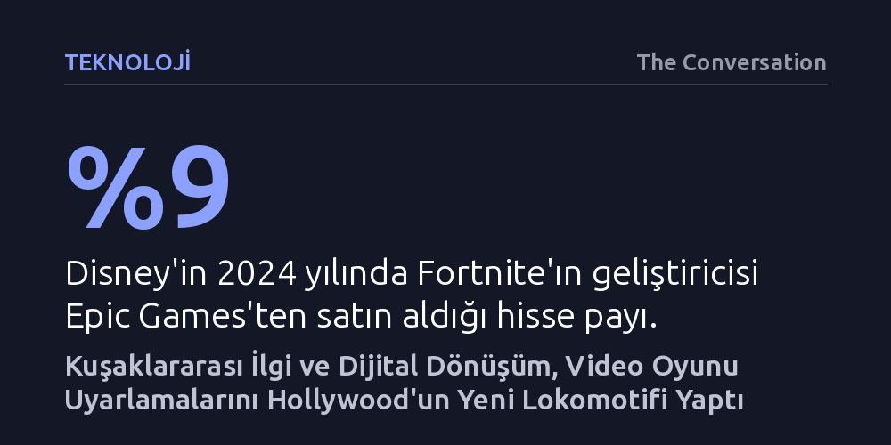

TEKNOLOJI · The Conversation · 2026-10-19
90'lardaki gişe fiyaskolarının aksine video oyunu uyarlamaları; 30 yıllık nostalji döngüsü, gelişen dijital efektler ve medya holdinglerinin evren stratejileriyle Hollywood'un yeni lokomotifine dönüştü. Kuşaklararası meşruiyet ve teknolojik yakınsama, oyun dünyalarını sinema endüstrisinin en değerli yatırım alanına çevirdi.
Oyun uyarlamalarındaki patlamanın geçici bir popüler kültür hevesi değil; kuşak değişimi, teknolojik yakınsama ve şirket birleşmeleriyle şekillenen yapısal bir endüstriyel dönüşüm olduğunu gösteriyor.

1990'ların başında ev tipi video oyun pazarı henüz emekleme evresindeyken Hollywood, bu yeni eğlence dalgasının cazibesini uzun metrajlı sinema filmlerine taşımak için kolları sıvamıştı. Ancak Super Mario Bros. (1993), Mortal Kombat (1995) ve Jean-Claude Van Damme'ın başrolünde yer aldığı Street Fighter (1994) gibi ilk büyük denemeler, eleştirmenler tarafından yerden yere vuruldu ve gişede ağır hezimetlere uğradı. Dönemin kültür belirleyicileri video oyunlarını ya çocuklara yönelik geçici bir heves ya da bağımlılık ve şiddet üreten tekinsiz bir mecra olarak kodlamıştı.
Bugün ise sinema salonlarında bambaşka bir tablo hakim. Gösterim salonları, dev bütçeli gişe rekortmeni A Minecraft Movie'den övgü toplayan Resident Evil korku uyarlamasına ve bağımsız bir başarı yakalayan Iron Lung'a kadar sayısız oyun filmiyle dolup taşıyor. Bir zamanlar sinemanın kapısından içeri girmesi felaketle eşanlamlı görülen video oyunları, artık Hollywood'un en güvenilir gelir kapısına dönüştü. Sokak Dövüşçüsü'nün yeniden beyaz perdeye adım attığı bu dönemde, oyun uyarlama musluğunun neden böylesine gürül gürül akmaya başladığını anlamak gerekiyor.
Sinema stüdyoları, doğası gereği hem küçük yaştaki izleyicileri hem de ebeveynlerini aynı anda bilet gişesine çekebilecek projelere öncelik verir; Disney'in animasyon klasiklerini durmaksızın canlı aksiyon filmlere dönüştürmesinin ardındaki stratejik mantık da budur. 2020 civarında ivme kazanan yeni oyun uyarlaması furyası, tam da birkaç on yıl önce var olmayan bu çok kuşaklı kitle sayesinde hayat buldu. 1994'teki Street Fighter filmi oyun konsollara geldikten sadece birkaç yıl sonra vizyona sürülmüşken, günümüzdeki yeni yapım Ryu, Ken ve Chun-Li gibi simgelerle büyüyen ve aradan geçen onlarca yılda bağını koparmayan devasa bir izleyici tabanına hitap ediyor.
Medya yorumcusu Patrick Metzger'in nostalji sarkacı kavramı, popüler kültürün yaklaşık 30 yıl önceki akımları düzenli olarak ana akıma taşıdığını açıklar. Bugünün oyun uyarlamaları da tam bu döngüden besleniyor; 90'larda konsol başında vakit geçiren çocuklar artık bilet satın alan ve karar veren yetişkinlere dönüştü. Dahası, oyun oynayarak büyüyen bu nesil bugün filmleri çeken yönetmenleri ve yazıları kaleme alan eleştirmenleri oluşturuyor. Yeni Street Fighter filmini yöneten Kitao Sakurai'nin seriyle kurduğu çocukluk bağını açıkça vurgulaması ve eleştirmenlerin filmi gürültülü ve anlamsız bir saçmalık olarak damgalamak yerine kaynak metne sadakati üzerinden ciddiyetle incelemesi, oyunların kazandığı kültürel meşruiyeti gözler önüne seriyor.
İlk dönem oyun filmlerinin yaşadığı en büyük handikaplardan biri iki mecra arasındaki teknolojik uyumsuzluktu. 1990'ların başında büyük prodüksiyonlu Hollywood filmleri pratik maketler ve fiziksel özel efektlerle gerçekçi dünyalar kurarken, video oyunları iki boyutlu piksel grafiklerine yani spritelara dayanıyordu. Bu durum, oyunların doğasını sinema perdesine inandırıcı biçimde aktarmayı teknik olarak neredeyse imkansız kılan devasa bir görsel boşluk doğuruyordu.
Yirmi birinci yüzyılla birlikte bu makas hızla kapandı. PlayStation gibi platformların üç boyutlu oyun devrimini yaygınlaştırması ve Hollywood'un dijital görsel efektleri üretiminin merkezine yerleştirmesi iki dünyayı birbirine eşitledi. Medya kuramcısı Henry Jenkins'in 2006'da Matrix serisini incelerken dile getirdiği gibi, "aynı dijital varlıkları yeniden kullandıkları için oyun dünyası artık neredeyse tamamen film dünyasıyla aynı görünebiliyor". Bu teknolojik yakınsama sayesinde günümüzde Jason Momoa, Street Fighter'ın yeşil tenli dövüşçüsü Blanka karakterine kusursuz bir görsel inandırıcılıkla hayat verebiliyor.
Marvel Sinematik Evreni ve Harry Potter gibi devasa markalar, modern eğlence endüstrisinde transmedya evrenlerinin ne kadar karlı bir model olduğunu kanıtladı. Bu yapılar izleyiciye sadece tek bir film satmıyor; devam filmleri, televizyon dizileri, tema parkı alanları ve lisanslı ticari ürünlerle birbirini besleyen devasa bir anlatı ağı kuruyor. 1990'lardan bu yana zengin mitolojiler geliştiren video oyunları da Hollywood için hazır bir yaratıcı maden niteliği taşıyor. Fenomen oyun Minecraft'ın sinemaya The Minecraft Movie yerine A Minecraft Movie ismiyle uyarlanması bile, bu uçsuz bucaksız evrende keşfedilecek sayısız öyküden sadece birinin anlatıldığını bilinçli olarak vurguluyor.
Disney, Universal ve Warner Bros. ile Paramount birleşmesini yöneten Skydance gibi medya holdingleri, oyun dünyalarını bu transmedya stratejisinin en temel taşı olarak konumlandırıyor. Örneğin Disney, 2024 yılında Fortnite'ın yapımcısı Epic Games'in yüzde 9 hissesini bünyesine katarak Marvel ve Star Wars gibi dev markalarını oyun tabanlı bir sosyal evrene entegre etmeye başladı. Benzer biçimde Sony, 2019'da kurduğu PlayStation Productions ile kendi oyunlarını sinemaya uyarlayarak platformları arasında kesintisiz bir tanıtım ağı işletiyor. Önümüzdeki iki yıl içinde The Legend of Zelda, Elden Ring ve Call of Duty filmlerinin vizyona girecek olması, Hollywood stüdyolarının tıpkı atari salonlarında sıraya giren oyuncular gibi bu kuyruğa girdiğini ve oyun çağının henüz başlangıcında olduğumuzu gösteriyor.